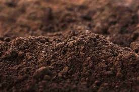

Loamy soil is a balanced mixture of sand, silt, and clay. It retains moisture well and is rich in nutrients. Loam soil is a type of soil characterized by a balanced mixture of sand, silt, and clay particles. It's generally considered the most ideal soil type for plant growth due to its excellent water-holding capacity, good drainage, and ability to provide sufficient aeration for roots